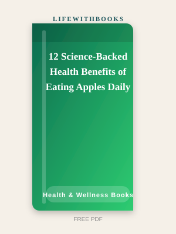
12 Science-Backed Health Benefits of Eating Apples Daily
Evidence-based apple nutrition guide covering gut health, heart support, blood sugar balance and pra
Read MoreHealth is the platform on which everything else in life is built. Without physical wellbeing, career ambition, family engagement, intellectual curiosity, and every other human project becomes harder to sustain. Yet in an era of conflicting nutritional advice, supplement marketing, and wellness industry noise, finding reliable, evidence-based guidance on diet, exercise, and lifestyle is more challenging than ever. The health and wellness books on LifeWithBooks cut through the noise by focusing on foundational, evidence-backed approaches to eating, nourishment, and vitality — free from commercial agendas. The collection begins with food, because diet is the most powerful lever most people have on their long-term health. The books here cover the nutritional properties of everyday foods — fruits, vegetables, herbs, and spices that most people eat without understanding their specific contributions to health — as well as practical guides to building healthier eating patterns, reducing inflammation through diet, and using food as preventive medicine rather than simply fuel. Understanding what we eat transforms how we eat. A person who knows that turmeric contains curcumin with significant anti-inflammatory properties will add it to their cooking differently than someone who uses it merely for colour. A parent who understands the immune-supporting properties of specific vegetables can make confident, informed choices for their family rather than relying on marketing claims. A person managing chronic fatigue who understands the relationship between blood sugar, fibre, and energy levels has genuine tools for improving their daily experience. Knowledge, in health, translates directly into better decisions. The books in this category also address specific health goals: weight management, detoxification, immune support, and anti-inflammatory nutrition. These are presented through the lens of whole-food, evidence-based approaches rather than extreme protocols or product recommendations. Our editorial position is simple: the most powerful health intervention available to most people is consistent, varied, plant-rich eating — and the books in this library provide the detailed knowledge to put that into practice.
Health and wellness books are most valuable when they change habits rather than simply inform. The common trap is reading a beautifully presented nutrition guide, feeling motivated for a day, and then returning to old patterns within a week. To avoid this, approach each book with one specific goal: not 'eat healthier' but 'add a vegetable to lunch every day for thirty days' or 'replace one sweet snack with a piece of fruit'. Specificity is the bridge between information and behaviour change. Read the fruit and vegetable guides alongside your actual shopping and cooking. When a book explains the nutritional properties of bananas, read it while shopping and make a note to eat one tomorrow morning. When the smoothie guide suggests a specific anti-inflammatory combination, make it that weekend and notice how you feel. Health knowledge that lives only in books produces no benefit; health knowledge applied to real food and real habits produces compounding returns over years and decades. The home remedies and anti-inflammatory guides in this collection should be approached as complementary to, not substitutes for, professional medical care. These resources draw on traditional nutritional wisdom and documented food properties — they are appropriate for general wellness and preventive health, not for managing diagnosed conditions without professional guidance. Use them to improve your baseline health, not to replace your doctor. For sustainable change, focus on addition rather than restriction. Adding nutrient-dense foods to your existing pattern is psychologically easier and more sustainable than removing foods you enjoy. Build a diet rich enough in vegetables, fruits, legumes, and whole grains that there is simply less room for empty calories — rather than trying to white-knuckle resistance to foods you love.

Evidence-based apple nutrition guide covering gut health, heart support, blood sugar balance and pra
Read More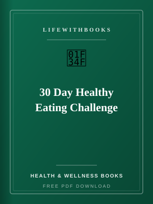
A printable 30-day nutrition challenge with daily meal ideas, checklists and habit-building prompts.
Read More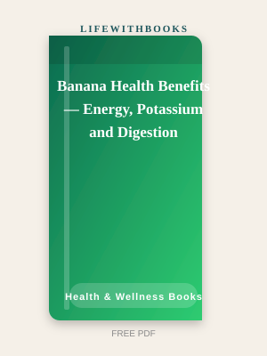
How bananas support workouts, electrolyte balance and digestive comfort in everyday diets.
Read More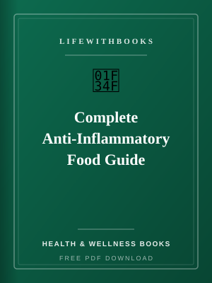
Lower chronic inflammation with practical nutrition choices, meal plans and spice compounds.
Read More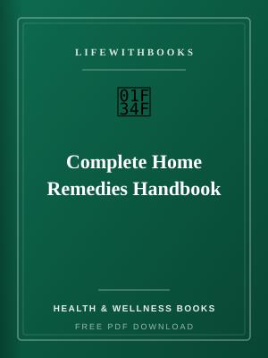
Safe, practical natural remedies for common concerns with recipes, safety notes and when to see a do
Read More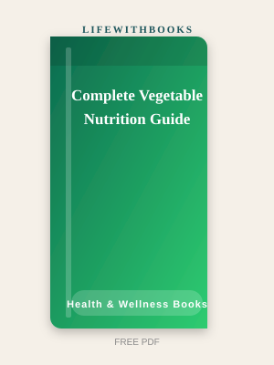
Evidence-based vegetable handbook with 18 profiles, cooking methods, storage tips and seasonal plann
Read More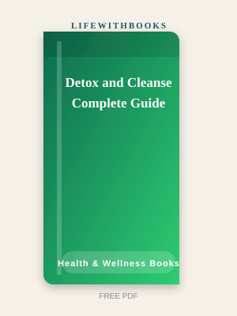
A science-based, food-first detox framework without extreme starvation methods.
Read More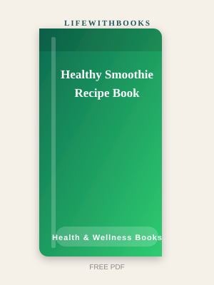
20 complete smoothie recipes with prep tips, ingredient swaps and nutrition highlights.
Read More
Food-first immune support with 15 food profiles, nutrient science, meal plans and smoothie recipes.
Read More
How to use turmeric safely for inflammation support, immunity and kitchen wellness routines.
Read More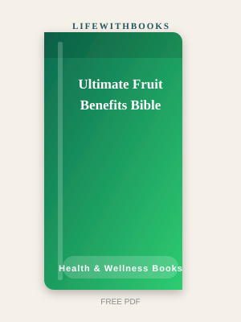
A 29-page practical guide to fruit nutrition, seasonal eating, nutrient tables and smart combination
Read More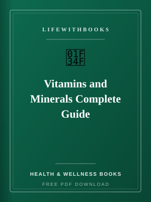
Understand nutrients, deficiency signs, food sources and daily requirements in one reference guide.
Read More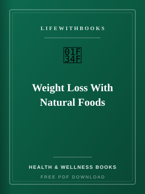
Sustainable fat-loss strategies using whole foods, meal plans and progress tracking — without extrem
Read More